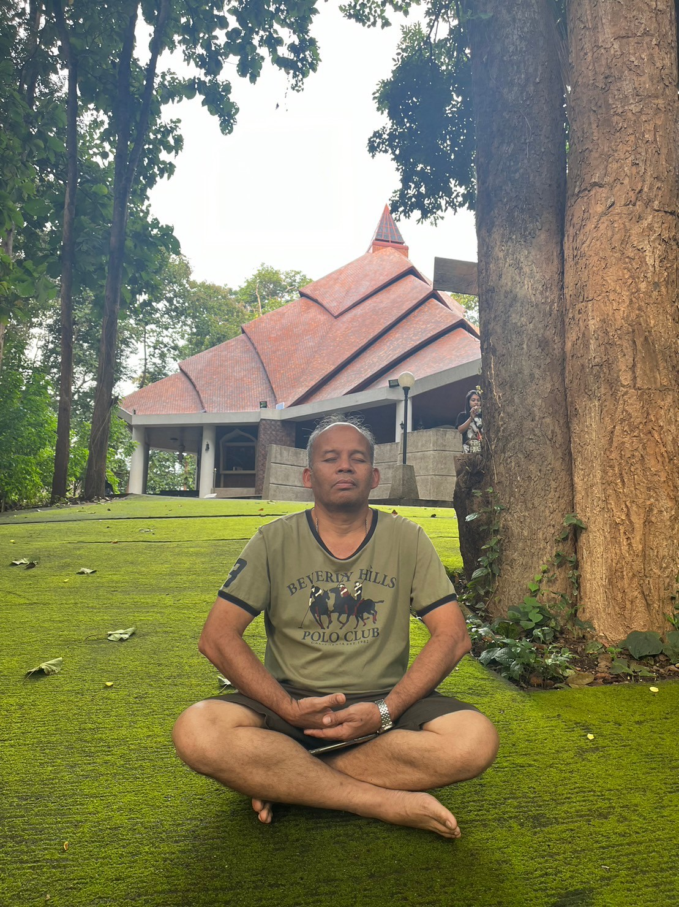

นักวิชาการผู้เชี่ยวชาญด้านพฤกษศาสตร์ การอนุรักษ์พันธุ์พืช และการบริหารจัดการสวนพฤกษศาสตร์ ควบคู่ไปกับใบประกอบวิชาชีพเภสัชกรรมไทย บูรณาการองค์ความรู้ธรรมชาติวิทยาและสมุนไพรไทย

ผู้อำนวยการส่วนอนุรักษ์และฟื้นฟูพันธุ์พืช
วันอาทิตย์ที่ 24 พฤษภาคม พ.ศ. 2513
เวลา 9.00 น. ปีจอ
จังหวัดสุรินทร์
สมรส
ประเภท เภสัชกรรมไทย
ขึ้นทะเบียนเป็นผู้ประกอบโรคศิลปะ พ.ศ. 2554
สถาบันเทคโนโลยีการเกษตรแม่โจ้
มหาวิทยาลัยแม่โจ้
กระทรวงสาธารณสุข
ปฏิบัติงานด้านข้อมูลและการวิเคราะห์พรรณพืชในจังหวัดสุรินทร์
ปฏิบัติงานรับราชการในสายงานส่งเสริมและดูแลการจัดแต่งพรรณไม้เมืองหลวง (ลาออกจากราชการ)
มุ่งเน้นการทำงานในห้องปฏิบัติการ การคัดจำแนกพฤกษศาสตร์เชิงลึก และงานพฤกษศาสตร์สาขาต่างๆ
วางกลยุทธ์การรักษาสายพันธุ์พืชสมุนไพรและพืชพันธุ์หายากในประเทศไทย
รับหน้าที่ควบการบริหารจัดการโครงการพัฒนาและวางระบบบำรุงพืชมีชีวิตขององค์การทั้งหมด
วิจัยควบคุมคุณภาพพืชมีชีวิตในโครงการอนุรักษ์และประเมินสภาวะของสายพันธุ์เฉพาะถิ่น
จัดเก็บข้อมูลฐานระบบพันธุศาสตร์พืชมีชีวิตและการแลกเปลี่ยนวิชาการทางพฤกษศาสตร์ระดับสากล
รับผิดชอบวางนโยบายหลัก วิเคราะห์และติดตามการอนุรักษ์-ฟื้นฟูพันธุ์พืชและระบบนิเวศป่าไม้ของประเทศไทย
เข้ารับการฝึกอบรมด้าน "การจัดการโรงเรือนและพืชสวน" ณ สวนพฤกษศาสตร์คิว (Kew Garden), Wakehurst Place และสมาคมพืชสวน Royal Horticultural Society's Gardens (Wisley)
ศึกษาดูงานด้านการวิจัย สรรพสิ่ง และระบบสวนพฤกษศาสตร์การอนุรักษ์สายพันธุ์เขตกึ่งร้อน
ศึกษาและสำรวจรูปแบบนวัตกรรมการสร้างระบบนิเวศจำลอง การท่องเที่ยวเชิงพฤกษศาสตร์ และการจัดการสวนยุคใหม่
ศึกษาดูงานระบบการจัดการสวนพฤกษศาสตร์ในโซนแล้งและแนวทางรวบรวมพืชสมุนไพรพื้นถิ่น
ขอนแก่นการพิมพ์, ขอนแก่น. จำนวน 114 หน้า. ISBN: 974-666-554-5
เสนอ ณ โรงแรมทีเคพาเลซ กรุงเทพมหานคร (ลงวันที่ 02/02/2555)
Published in Journal of Ethnopharmacology, Volume 103, Pages 201–207
Published in Journal of Medicinal Plants Research, Vol. 5(10), pp. 1978–1986
Research supported by Khon Kaen University Research Fund
Published in Chiang Mai Journal of Science, Vol. 41(5.1), pp. 1171–1181
Published in Chinese Journal of Integrative Medicine, 27pp.